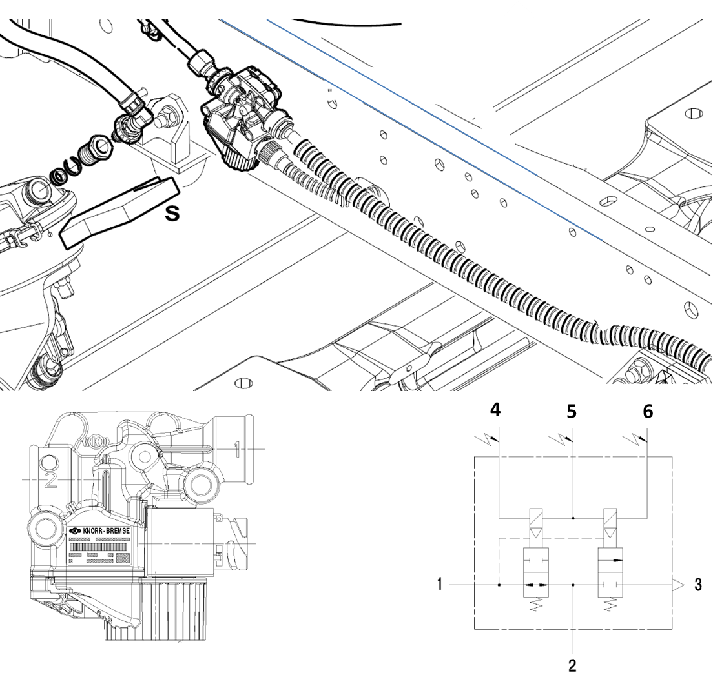

|
 

1
|
Entrada de ar
|
2
|
Saída de ar
|
3
|
Exaustão
|
4
|
Positivo válvula de saída
|
5
|
Negativo
|
6
|
Positivo válvula de entrada
|
|
Voltagem nominal
|
24 Volts
|
|
Resistência nominal
|
15 ± 3 Ohm
|
|
Corrente nominal
|
1,5 A
|
|
Pressão máxima de operação
|
10,2 bar
|
Descrição da Falha
Circuíto da válvula moduladora, corrente abaixo do normal ou circuito aberto.
Indicação de Falha
Luz de alerta da central acende constantemente com o símbolo  com o veículo andando ou parado. com o veículo andando ou parado.
Estratégia de Monitoramento
O módulo ABS
monitora o sinal da válvula moduladora.
Efeito da Falha
A
funcionalidade elétrica do sistema ABS é feita automaticamente e, caso
seja detectada alguma anomalia, uma luz de advertência acende-se no
painel de instrumentos e o sistema ABS ficará inoperante parcialmente ou integralmente.
Possíveis Falhas FMI 03: tensão acima do normal ou curto ao positivo.
FMI 04: tensão abaixo do normal ou curto ao negativo.
FMI 05: corrente abaixo do normal ou circuito aberto.
Aviso
 
Antes de iniciar o trabalho em um veículo, sempre calce as rodas para impedir que o veículo se mova quando liberado o freio.
Registros de Falhas em Outros Módulos de Comando
Não.
Considerar os esquemas elétricos do veículo
| Verificação
| Medição
| Eliminação da Falha
|
Válvula moduladora
|
Sinal da válvula moduldora
|
– Verificar os cabos quanto à rompimento ou fios expostos.
– Verificar as conexões quanto a mau contato ou pino torto.
– Caso nenhuma falha seja verificada, substituir a Válvula Moduladora.
- Caso nenhuma falha seja verificada, substituir o Módulo ABS.
|
|